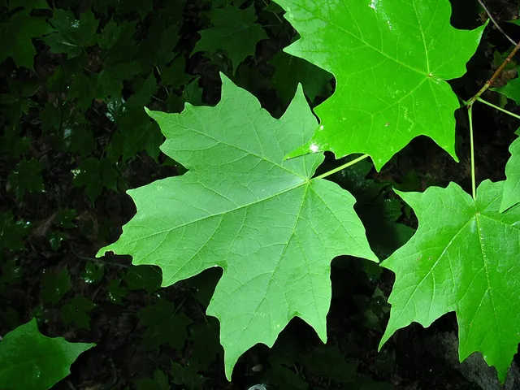
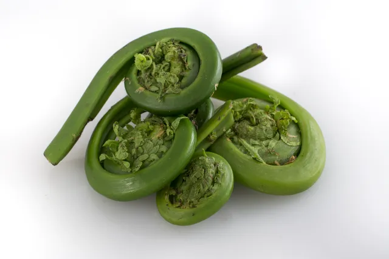
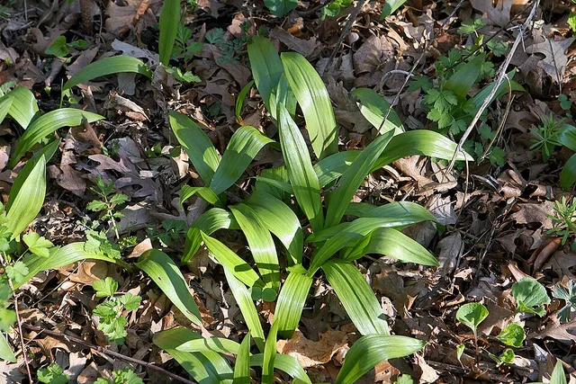
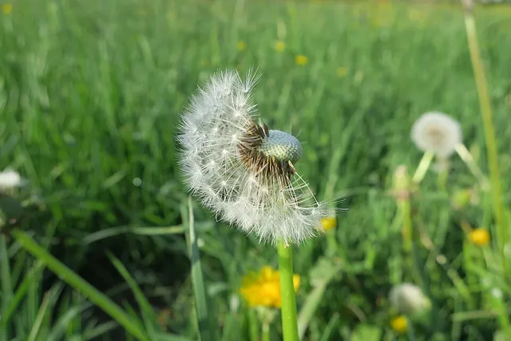
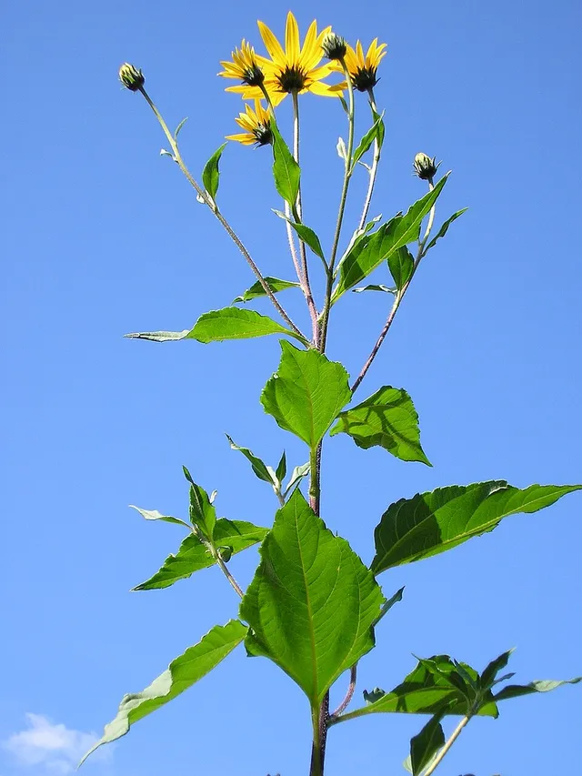

Wild food recipes from the United States
41 dishes made with foraged ingredients, from drinks and preserves to mains and desserts.
Drinks
 Sumac lemonadeStaghorn sumac
Sumac lemonadeStaghorn sumac Elderflower cordialElderflower
Elderflower cordialElderflower Spruce tip sodaSpruce tips
Spruce tip sodaSpruce tips Prickly pear agua frescaPrickly pear
Prickly pear agua frescaPrickly pear Rose hip teaRose hips
Rose hip teaRose hips
Maple sap teaMaple sap Chokecherry syrup sodaChokecherry
Chokecherry syrup sodaChokecherry Nettle teaStinging nettle
Nettle teaStinging nettle
Starters & snacks

Fiddlehead sautéOstrich fern fiddleheads
Pickled rampsRamps Black locust frittersBlack locust flowers
Black locust frittersBlack locust flowers
Dandelion frittersDandelion Purslane saladPurslane
Purslane saladPurslane- Verdolagas con huevoPurslane
- Nopales saladPrickly pear
 Roasted pecansPecan
Roasted pecansPecan
Sauces, preserves & sides
 Wild garlic mustard pestoGarlic mustard
Wild garlic mustard pestoGarlic mustard- Ramp butterRamps
 Cranberry sauceWild cranberry
Cranberry sauceWild cranberry Elderberry syrupElderberry
Elderberry syrupElderberry Wild grape jellyWild grape
Wild grape jellyWild grape Crabapple jellyCrabapple
Crabapple jellyCrabapple Kinpira goboBurdock root
Kinpira goboBurdock root
Main course
- Nettle soupStinging nettle
 Lamb's quarters spanakopitaLamb's quarters, Stinging nettle
Lamb's quarters spanakopitaLamb's quarters, Stinging nettle Wild rice soupWild rice
Wild rice soupWild rice Crawfish étoufféeCrayfish
Crawfish étoufféeCrayfish Camas and salmon bakeCamas
Camas and salmon bakeCamas
Roasted sunchokesJerusalem artichoke
 Acorn pancakesAcorns
Acorn pancakesAcorns Black walnut breadBlack walnut
Black walnut breadBlack walnut Blackberry cobblerBlackberry
Blackberry cobblerBlackberry Persimmon puddingAmerican persimmon
Persimmon puddingAmerican persimmon Pawpaw ice creamPawpaw
Pawpaw ice creamPawpaw Huckleberry pieHuckleberry
Huckleberry pieHuckleberry Serviceberry crumbleServiceberry
Serviceberry crumbleServiceberry Mulberry galetteMulberry
Mulberry galetteMulberry Wild strawberry shortcakeWild strawberry
Wild strawberry shortcakeWild strawberry